Branding · Digital studio
Snowy Digital Studio
A digital design studio supporting small businesses through brand direction, website design, social media, and practical business support.
I design useful digital products and clear brand experiences, combining user research, thoughtful visual design, and hands-on collaboration.
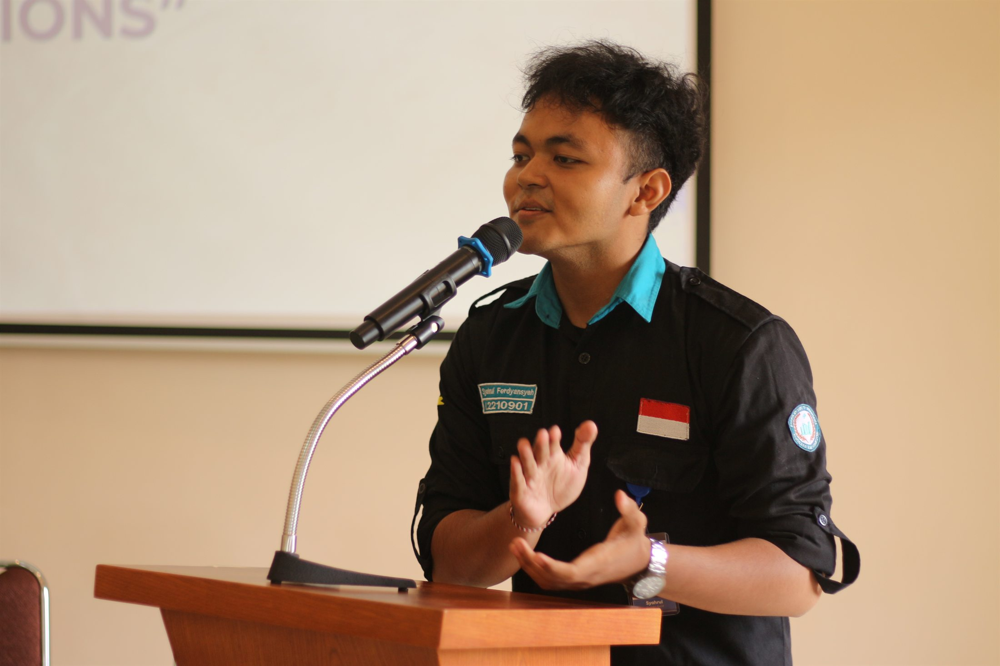
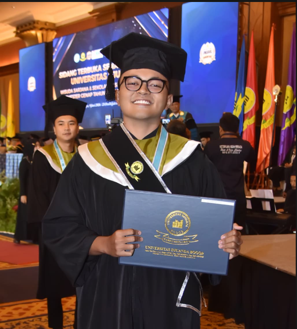
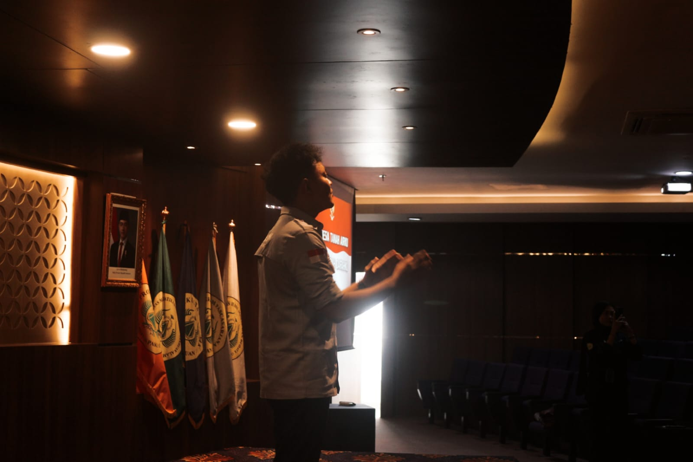
I am a Computer Science graduate from Universitas Djuanda with a 3.79 / 4.00 GPA. My work sits at the intersection of product design, user experience, and digital branding.
My final project was a financial management app prototype for young adults, developed through the Design Thinking process. I enjoy turning research and feedback into practical, considered experiences.
Education · Bachelor of Computer Science · 2022–2026
A selection of product design, user experience, and brand identity projects. Each project reflects a clear problem, a considered process, and purposeful visual decisions.
A digital design studio supporting small businesses through brand direction, website design, social media, and practical business support.
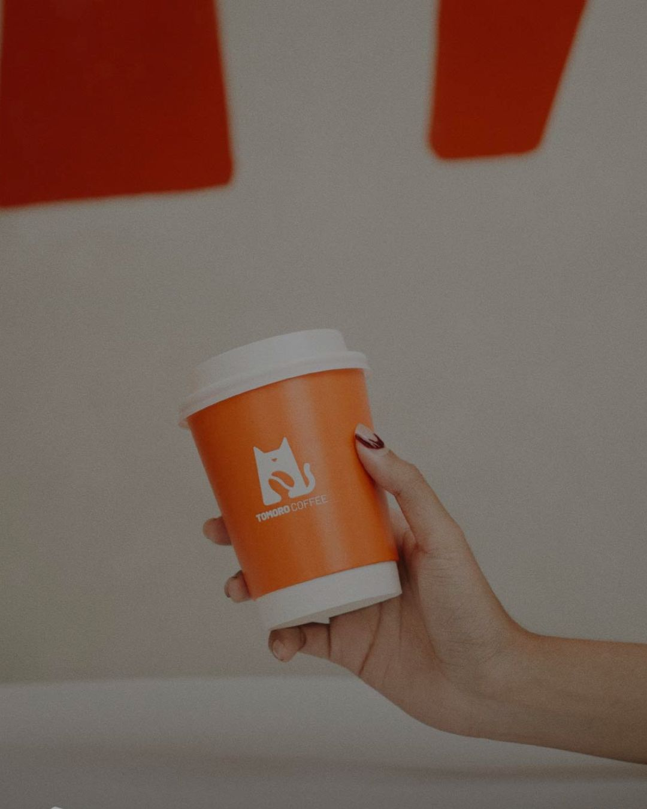
Reviewed more than 500 app-store reviews to identify friction points and opportunities to improve the coffee ordering experience.
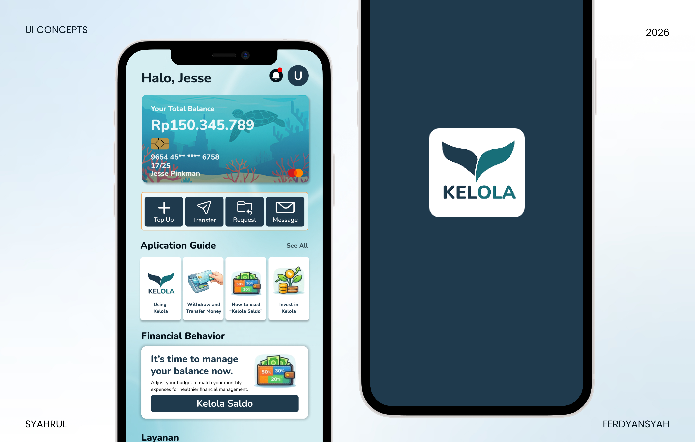
A financial literacy app concept developed through research, user flows, wireframes, high-fidelity prototyping, and heuristic evaluation.
View project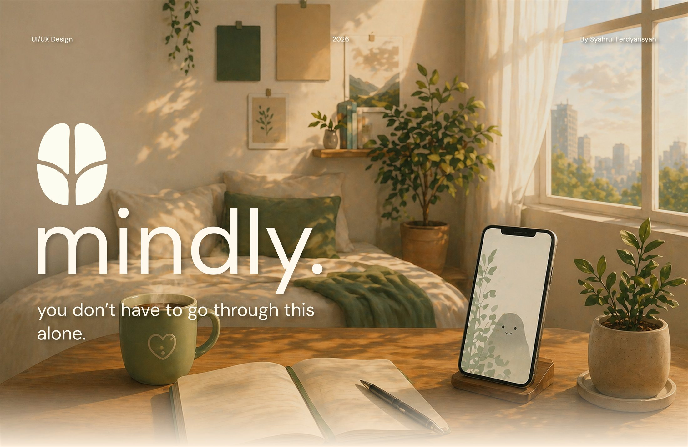
A mental wellness app concept with mood check-ins, an AI chat experience, and a community space designed around supportive user journeys.
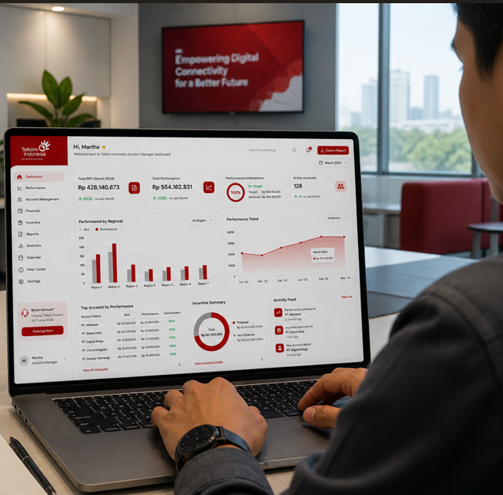
An employee performance evaluation prototype shaped by stakeholder interviews, structured user flows, wireframes, and Figma feedback sessions.
View project
A visual identity for a dishwashing product, built to feel clean, dependable, and easy to recognize across brand touchpoints.
View project
A website and mobile experience for a creator rewards platform, including login and user-facing pages.

A brand identity and packaging system for a food and beverage supply brand, designed for consistency across products and communications.
View project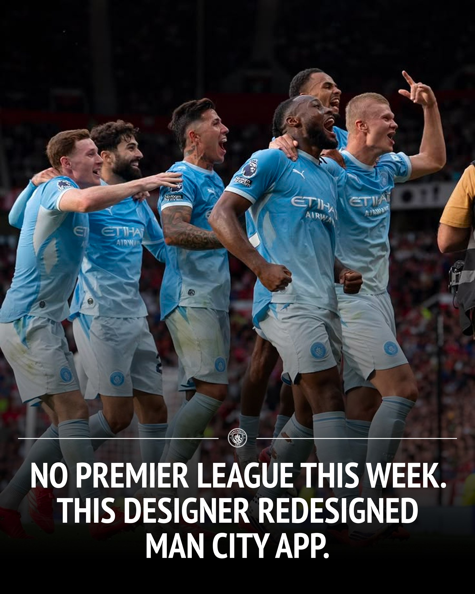
A mobile app redesign concept for Manchester City, exploring a refreshed visual direction and a clearer fan experience.
My community and organization work has strengthened how I lead, communicate, and coordinate people around a shared goal.
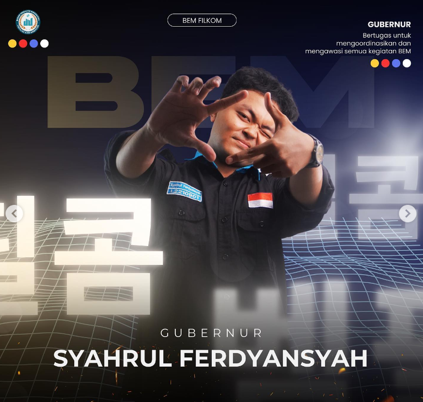
Led the Faculty of Computer Science student executive council, coordinating initiatives, programs, and student development.
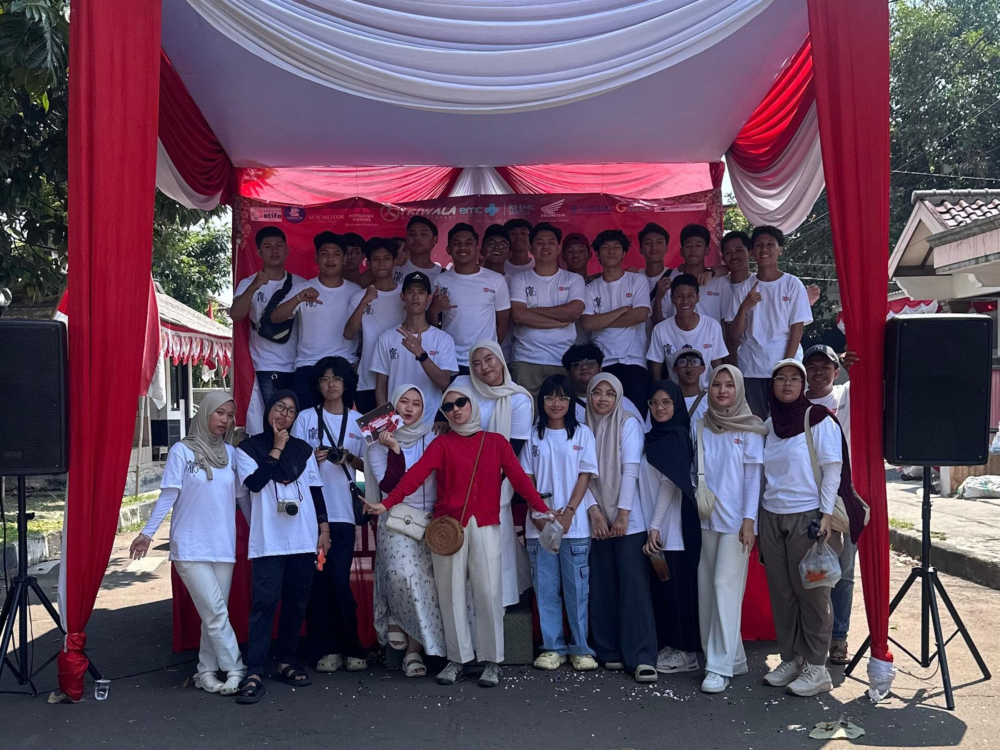
Coordinated a neighborhood celebration and local bazaar with residents, vendors, and sponsors.
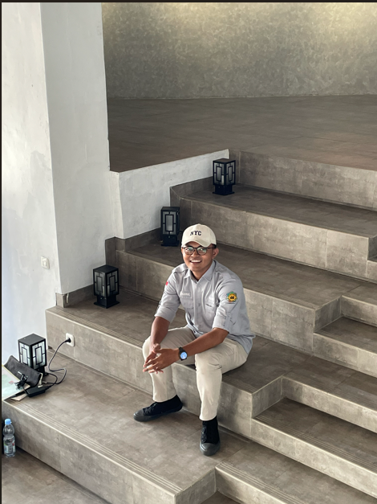
Supported recruitment, member development, evaluation, and coordination within a large student choir organization.
A mix of professional, internship, and organization experience that brings research, communication, and follow-through together.

Lead research, brand direction, website and social media work, while coordinating projects, clients, timelines, and day-to-day studio operations.

Managed Instagram content and customer communication, and contributed visual content and branding concepts for the business.
InstagramInterviewed stakeholders and developed a performance evaluation prototype for the YAM team, presenting Figma flows and incorporating feedback. Also supported audit documentation and digitization.
Led the council and its programs, building collaboration across students, committees, and faculty stakeholders.
Coordinated recruitment, training, evaluation, and development initiatives for more than 50 members.

Coordinated a village digitalization initiative, support for local small businesses, and community programs. The team received second place for Best Group.
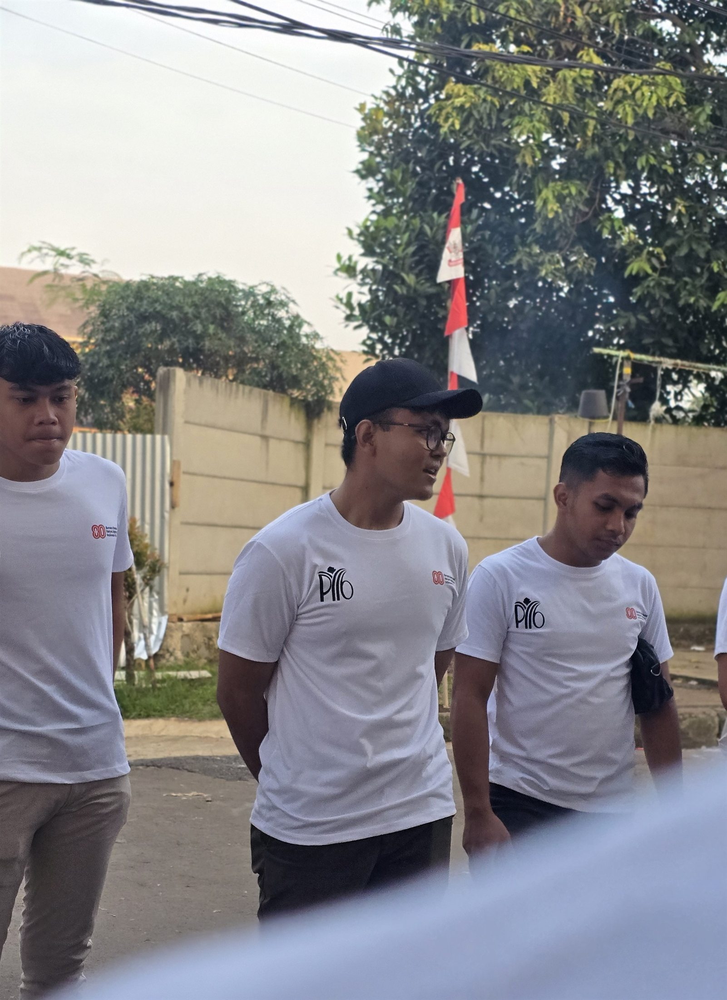
Planned and coordinated community events, managing timelines, volunteers, vendors, sponsors, and resident communication.
If my experience fits what your team is looking for, I would be glad to talk.